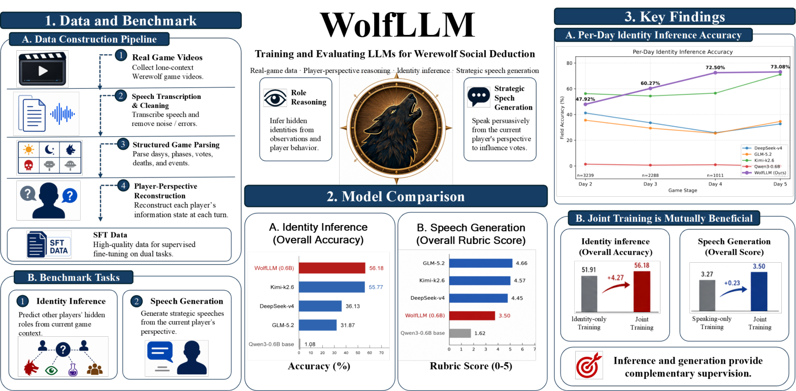

About Me关于我
I am a J.D. & LL.M. student at Peking University, where I also received my B.A. in 2024. I am currently an LLM Product Strategy Intern at the Tencent TEG Foundation Model Department. 我目前在北京大学攻读美国法 J.D. 与中国法硕士，2024 年本科毕业于北京大学。 现任腾讯 TEG 基础模型部大模型产品策略实习生。
My research interests lie in LLM evaluation & benchmarks, social reasoning in incomplete-information games, and trustworthy legal AI (e.g., hallucination detection, RAG, rubric-based and human evaluation). 研究兴趣包括大模型评测与 Benchmark、不完全信息博弈中的社会推理， 以及可信法律 AI（如幻觉检测、RAG、Rubric 与人工评测）。
Publications论文
* equal contribution共同第一作者
† corresponding author通讯作者

@article{fang2026wolfllm,
title = {WolfLLM: Training and Evaluating Large Language
Models for Werewolf Social Deduction},
author = {Fang, Yu and Ye, Junliang},
year = {2026},
note = {Under review}
}
Experience & Education经历与教育
Work实习
- Explored game benchmarks and built an evaluation harness with vLLM match-play; explored recursive self-improvement (RSI) for legal agents. 调研游戏 Benchmark 并搭建评测程序（vLLM 对局模式），探索法律 Agent 工作能力的 RSI。
- Designed 10+ high-discrimination human-eval and multi-turn dynamic tasks, and an "LLM-judge fallback to human review" mechanism; compared legal working capability across four frontier models. 构造高区分度人评题与多轮动态题 10+ 道，建立"机评打不好 → 人评补位"机制，完成四大模型法律 working 能力对比。
- Led a Chinese legal-scenario taxonomy (MECE review, dedup, merging) and co-built benchmark data with the algorithm team; ran QA on 20+ GDPval legal task packages. 主导中文法律场景 Taxonomy（MECE 审查、去重合并），与算法侧共建 Bench 数据；负责 20+ 个 GDPval 法律任务包质检。
- Legal Hallucination Checker (owner): verifies AI legal answers against authoritative databases to catch fabricated statutes and case numbers; built a 20,000-document evaluation set and benchmarked hallucination across six models including GPT. 法律幻觉校验器（产品负责人）：结合权威法律数据库自动核验虚构法条、案号；搭建 2 万份政府文件评测体系，完成 GPT 等六大模型法律幻觉对比评测。
- Legal Knowledge Platform (owner): vector ingestion and API/MCP knowledge services; compared LLM Wiki vs. RAG retrieval and proposed a hybrid "vector retrieval + Wiki reading" strategy. 法律书籍知识开放平台（产品负责人）：向量化入库与 API/MCP 知识服务；对比 LLM Wiki 与 RAG 检索，提出"向量定位 + Wiki 阅读"组合策略。